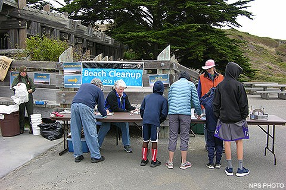
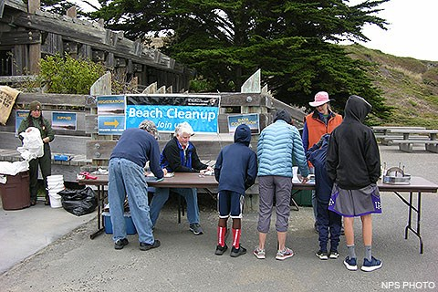
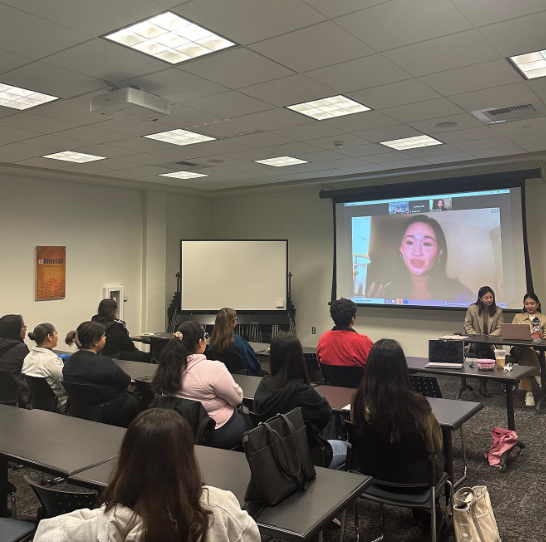
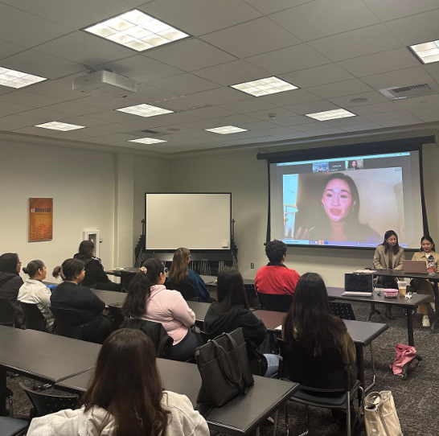
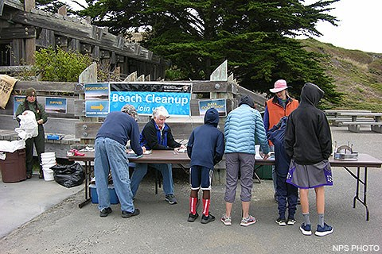
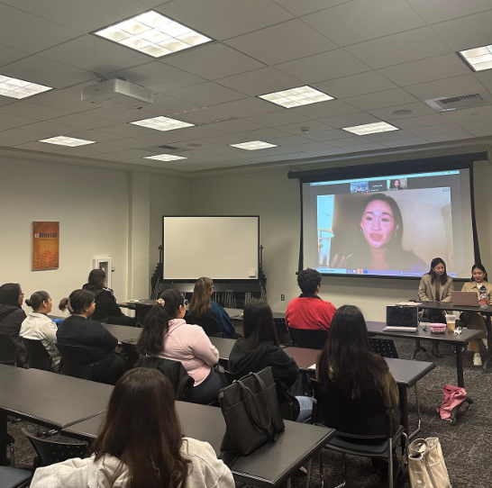

Fernanda Estrada
Fernanda Estrada is a student majoring in Political Science at the University of California Riverside with a keen interest in pursuing a career in law and a strong passion for leadership and learning. Fernanda is eager to embark on a journey of academic exploration and personal development as she prepares for a future in the legal profession. Fernanda is a diligent and ambitious student, excelling in her coursework and demonstrating a thirst for knowledge in various subjects related to law and society. Her academic pursuits have afforded her valuable insights into legal principles, critical thinking skills, and ethical considerations, laying a solid foundation for her future studies and career aspirations.Outside of the classroom, Fernanda is actively involved in extracurricular activities that allow her to further develop her leadership skills and expand her horizons. She participates in student government, where she collaborates with peers to advocate for positive change and promote campus-wide initiatives. Additionally, Fernanda is looking to volunteer with local legal aid organizations, where she may be able to assist with research projects and community outreach efforts, gain firsthand exposure to the legal field and its impact on society.
Fernanda's passion for law extends beyond her academic pursuits, as she is deeply interested in exploring the intersection of law, social justice, and human rights. Her fascination with legal work began in childhood, sparked by a curiosity about the principles of fairness, accountability, and advocacy that underpin the law. This early interest has since evolved into a lifelong passion for pursuing a career in the legal profession, where I hope to contribute to positive change and uphold the principles of justice and equality. She is an avid reader of legal literature and enjoys engaging in discussions on pressing legal issues and their implications for society. Fernanda is also passionate about empowering others through education and advocacy, and she actively seeks opportunities to contribute to causes she believes in and make a positive difference in the world. Looking ahead, Fernanda is determined to leverage her education, passion, and drive to pursue a career in law that allows her to effect meaningful change and serve the needs of others. She aspires to continue her academic journey, eventually earning a law degree and specializing in areas such as civil rights law, environmental law, or public interest law.
Fernanda is committed to lifelong learning and personal growth, and she eagerly anticipates the opportunities and challenges that lie ahead on her path to becoming a successful legal professional. Fernanda Estrada is excited about the possibilities that the future holds as she embarks on her journey to pursue a career in law. With her passion for leadership, commitment to learning, and dedication to making a positive impact, Fernanda is poised to thrive academically and professionally as she works towards achieving her goals and fulfilling her potential in the legal profession.
Experience
UCR Lawtinx
• Explores law schools
• Reads books about political science
• Opportunities to talk to people in law school or with law careers
Education
UC Riverside
University to be determined
Portfolio
 

 


